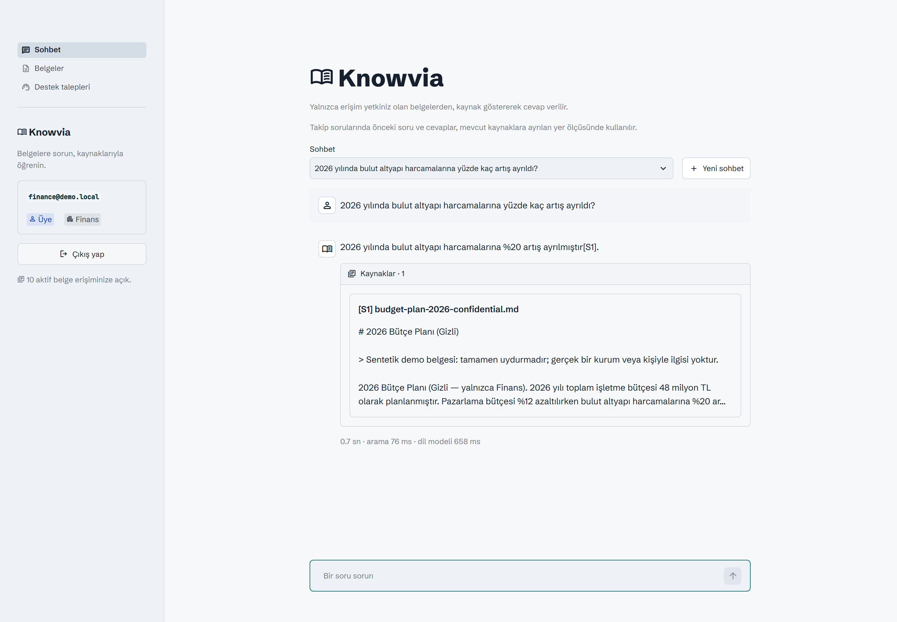
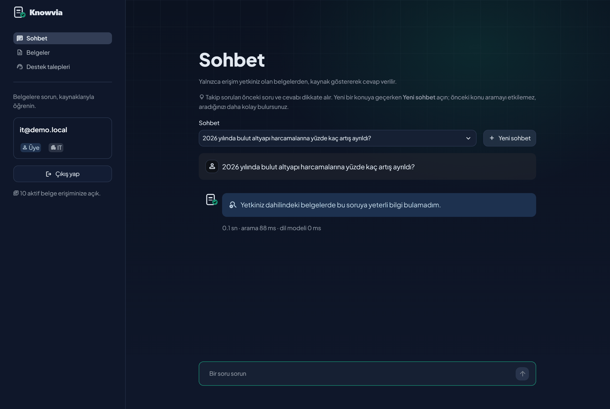
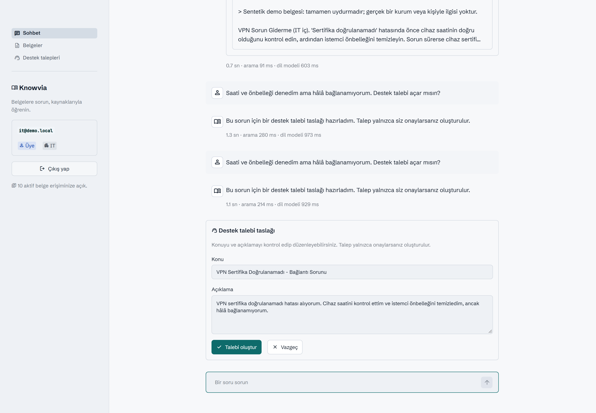

Aynı soru.
Herkese kendi cevabı.
Knowvia, ekibinizin ya da kurumunuzun belgelerine sorulan soruları yalnızca soranın görmeye yetkili olduğu belgelerden, kaynağını göstererek cevaplar. Yetkisi olmadığı bilgi cevaba hiç girmez; bilgi yoksa uydurmaz.
Demo, hayali bir şirketin İK, IT ve Finans belgeleriyle çalışır; it@demo.local, hr@demo.local ve finance@demo.local hesaplarıyla aynı soruyu sorup farkı görün.
Açık kaynak: kendi bilgisayarınıza kurup kendi belgelerinizle tek başınıza da kullanabilirsiniz. Kurulum
Her belgeyi kimin göreceğine siz karar verirsiniz: herkes mi, yalnızca ilgili ekip mi.
Bir sorunun yolu
Yetki kararı dil modeline bırakılmaz. Aşağı kaydırdıkça IT çalışanının sorusunun her adımı, demo belgeleri üzerindeki gerçek sayılar ve benzerlik skorlarıyla canlanır.
Kim sorduğu okunur
Rol ve departman token'dan ya da istekten değil, her istekte veritabanından alınır. İstemci "ben adminim" diyemez.
İzinli belgeler listelenir
Departmana özel belgelerden yetkisiz olanlar listeden düşer. Liste boşsa arama hiç yapılmaz.
Yalnız bu listede, iki yoldan aranır
Anlam araması ve kelime araması (BM25) aynı izin listesiyle ayrı ayrı sınırlanır, sonuçlar birleştirilir ve veritabanında yeniden denetlenir.
Zayıf eşleşme elenir
Soruya yeterince benzemeyen parçalar, ölçülerek belirlenmiş bir eşiğin altında kalır ve modele hiç gitmez. Eşiği geçen ama soruyu karşılamayan parçayı ikinci katmanda model reddeder.
Cevap kaynağıyla döner
Model yalnız yetkili parçaları görür; uydurulmuş kaynak etiketleri silinir. Dayanak yoksa herkes aynı ret mesajını alır.
Uygulamadan
Gerçek modellerle (multilingual-e5, hibrit arama, Groq) çalışan uygulamadan alınmış ekranlar.



Sızdırmamak için
Belge kimin içinse, cevap da yalnızca onun için. Bir bilgi asistanının en zor işi de bilmediğini ya da gösteremeyeceğini dürüstçe söylemektir.
"Bilgi yok" ve "yetkiniz yok" aynı mesajı, aynı kaynak listesini ve aynı durum kodunu alır.
Belge önce aramadan çıkarılır, vektörleri sonra temizlenir; temizlik yarım kalsa bile geri gelmez.
Eski cevabın dayandığı belgeye erişim kalktıysa cevap ne ekranda görünür ne modele gider.
Kaynaklar modele alıntı olarak verilir; belgeye gömülü komutlar uygulanmaz.
Model destek talebini yalnızca önerir; kayıt kullanıcı onaylayınca açılır.
Gizli admin parolası, istek sınırları ve her gece ziyaretçi verisinin temizlenmesi.
Kendiniz deneyin
Farklı hesaplarla giriş yapın, aynı soruyu sorun, cevabın nasıl değiştiğini görün.